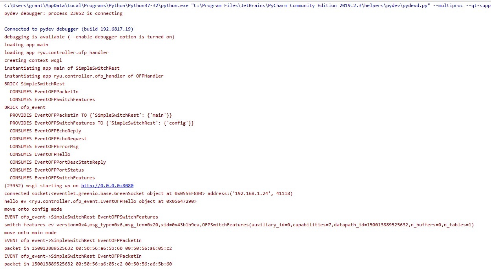
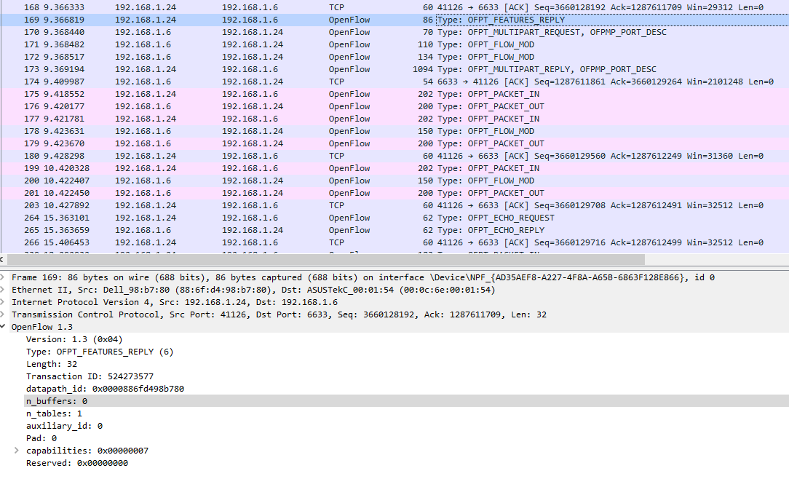
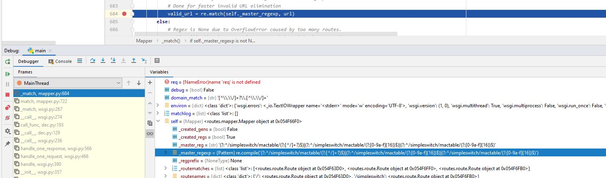
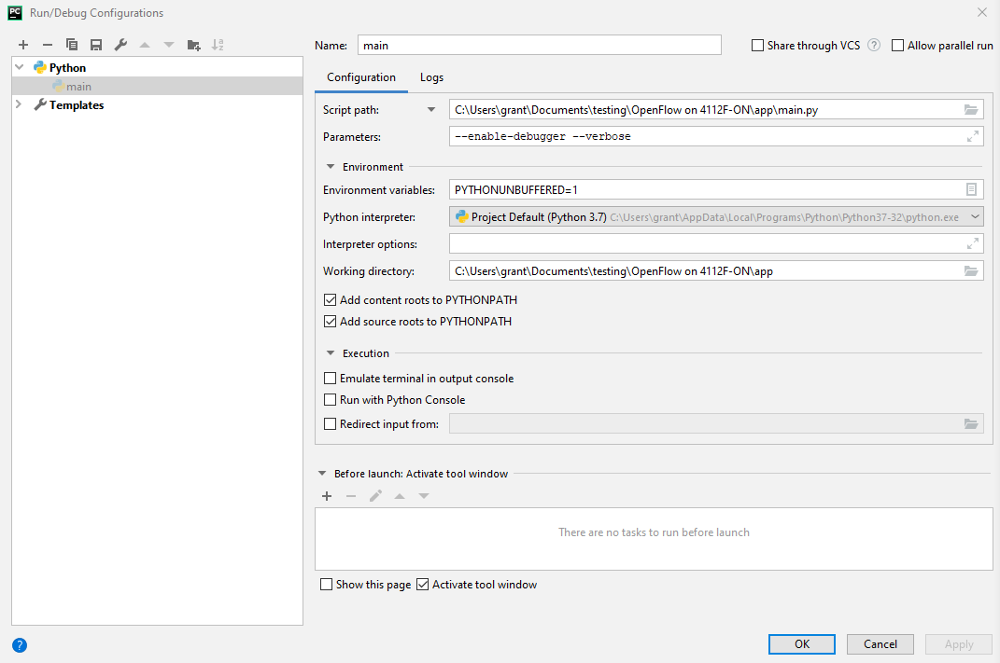

Bug in Ryu datapath_id
Overview
Problem
Ryu incorrectly truncates datapath_id from 16 characters to 15.
I found the problem while testing this Ryu example.
Proof of Concept
Running the code in debug mode produces the below:  You can see that the switch ID 150013889525632 which is only 15 characters instead of the required 16.
To confirm that the problem was not with what the switch was sending I captured the response in Wireshark.

You can see the switch correctly adheres to the 64bit datapath_id requirement.
Detailed Troubleshooting
I found the problem when none of the routes ran when browsing to the address:
http://127.0.0.1:8080/simpleswitch/mactable/150013889525632
I eventually realized it is because of the following line:
@route('/simpleswitch', url, methods=['PUT'], requirements={'dpid': dpid_lib.DPID_PATTERN})
DPID_PATTERN's definition is as follows:
_DPID_LEN = 16
_DPID_FMT = '%0{0}x'.format(_DPID_LEN)
DPID_PATTERN = r'[0-9a-f]{%d}' % _DPID_LEN
You can see this more directly by looking at the regex as it is used in the WSGI call produced from the above line.

As you can see from {16} the switch ID Ryu produces does not match because it is a character short. You can fix the problem by using the URL:
http://127.0.0.1:8080/simpleswitch/mactable/0150013889525632
However, that then causes other code to fail because it is is looking for the original switch ID of 150013889525632.
Reproducing
My Configuration
- Controller is running on Windows in PyCharm
- Controller: Ryu
- Switch: 4112F-ON
Switch Version Info
Dell EMC Networking OS10 Enterprise
Copyright (c) 1999-2020 by Dell Inc. All Rights Reserved.
OS Version: 10.5.1.0
Build Version: 10.5.1.0.124
Build Time: 2020-02-12T09:05:20+0000
System Type: S4112F-ON
Architecture: x86_64
Up Time: 4 days 09:16:43
Setup
Enable OpenFlow on the Switch
On the switch run:
OS10# configure terminal
OS10(config)# openflow
OS10(config-openflow)# mode openflow-only
Configurations not relevant to openflow mode will be removed from the startup-configuration and system will be rebooted. Do you want to proceed? [confirm yes/no]:yes
Configure OpenFlow
OS10# configure terminal
OS10(config)# openflow
OS10(config-openflow)# switch of-switch-1
OS10(config-openflow-switch)# controller ipv4 <YOUR_CONTROLLER_IP> port 6633
OS10(config-openflow-switch)# no shutdown
See the switch config for details.
Run the Code
Run pip install ryu to install Ryu and its dependencies.
I have included my Ryu app as it currently was when I found the bug
in the file main.py.
I used PyCharm to perform debugging which required me to adjust the debug configuration to the below:

This will allow you to use PyCharm's debugger.
Alternatively, you can delete everything after line 358 in main.py and use ryu-manager
to run the application.
To run the code there is an application called ryu-manager. To run the code
you have to run ryu-manager main.py.